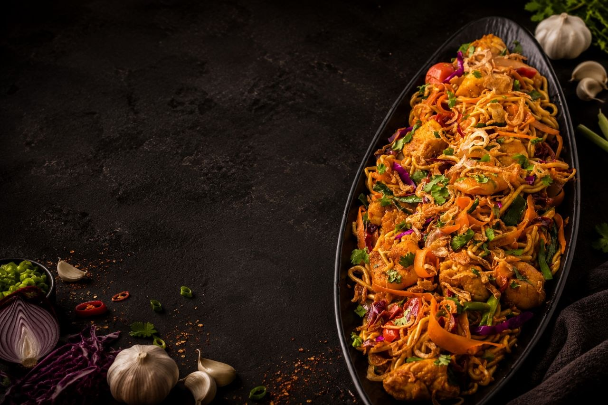

A flavorful noodle dish stir-fried with colourful vegetables and armotic curry spices.
320 kcal
Easy
10 mins
15 mins
Roll out the pizza dough on a lightly floured surface.
Soak or boil the rice noodles according to the package instructions. Drain and set aside.
Heat oil in a wok and sauté the chopped garlic until fragrant.
Add cabbage, carrots, capsicum, and spring onions. Stir-fry over high heat until slightly tender yet crisp.
Mix in curry powder, soy sauce, chili sauce, black pepper, and salt. Stir well to coat the vegetables.
Add the cooked rice noodles and toss everything together until evenly coated with the seasoning.
Garnish with chopped spring onions and serve hot.


Try delicious recipes only on Flavora.